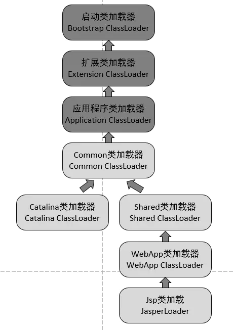

Tomcat 类加载机制
- Tomcat 类加载图

- Common 类加载器，负责加载 Tomcat 和 Web 应用都复用的类
- Catalina 类加载器，负责加载 Tomcat 专用的类，而这些被加载的类在 Web 应用中将不可见
- Shared 类加载器，负责加载 Tomcat 下所有的 Web 应用程序都复用的类，而这些被加载的类在 Tomcat 中将不可见
- WebApp 类加载器，负责加载具体的某个 Web 应用程序所使用到的类，而这些被加载的类在 Tomcat 和其他的 Web 应用程序都将不可见
- Jsp 类加载器，每个 jsp 页面一个类加载器，不同的 jsp 页面有不同的类加载器，方便实现 jsp 页面的热插拔
JVM 之内存模型
Tomcat 调优包括两个部分：
- 史上最强 Tomcat8 性能优化
- 调优一般从网络 IO、CPU、内存、硬盘 IO 等几个方面着手。
- 1、Tomcat 的自身调优
- 采用动静分离节约 Tomcat 的性能
- 调整 Tomcat 的执行器线程池
<Executor name="tomcatThreadPool" namePrefix="catalina-exec-" maxThreads="500" minSpareThreads="50" prestartminSpareThreads="true" maxQueueSize="100"/>
<!-- 参数说明：
maxThreads：最大并发数，默认设置 200，一般建议在 500 ~ 1000，根据硬件设施和业务来判断
minSpareThreads： Tomcat 初始化时创建的线程数，默认设置 25
prestartminSpareThreads： 在 Tomcat 初始化的时候就初始化 minSpareThreads 的参数值，如果不等于 true，minSpareThreads 的值就没啥效果了
maxQueueSize，最大的等待队列数，超过则拒绝请求
-->
<!--在Connector中设置executor属性指向上面的执行器-->
<Connector executor="tomcatThreadPool" port="8080" protocol="HTTP/1.1" connectionTimeout="20000" redirectPort="8443" />
- 调整 Tomcat 的连接器
- 修改 Tomcat 的运行模式
- tomcat7 及以下推荐使用 nio，tomcat8 建议使用 nio2
<Connector executor="tomcatThreadPool" port="8080" protocol="org.apache.coyote.http11.Http11Nio2Protocol" connectionTimeout="20000" redirectPort="8443" />
- apr：安装起来最困难，但是从操作系统级别来解决异步的 IO 问题，大幅度的提高性能
- 禁用 AJP 连接器
- AJP（Apache JServer Protocol）是针对与 Apache 结合使用的 tcp 协议，由于一般使用 nginx，所以可以禁用掉。
-
- 2、JVM 的调优
- 设置垃圾回收器
- 调优 Jvm 内存
JAVA_OPTS="-Dfile.encoding=UTF-8-server -Xms1024m -Xmx2048m -XX:NewSize=512m -XX:MaxNewSize=1024m -XX:PermSize=256m -XX:MaxPermSize=256m -XX:MaxTenuringThreshold=10-XX:NewRatio=2 -XX:+DisableExplicitGC"- -Xmx1024m 设置 JVM 最大可用内存为 1024MB
- -Xms1024m 设置 JVM 最小内存为 1024m。此值可以设置与-Xmx 相同，以避免每次垃圾回收完成后 JVM 重新分配内存。
- -XX:NewSize 设置年轻代大小
- -XX:MaxNewSize 设置最大的年轻代大小
- -XX:PermSize 设置永久代大小
- -XX:MaxPermSize 设置最大永久代大小
- -XX:NewRatio=4 设置年轻代（包括 Eden 和两个 Survivor 区）与终身代的比值（除去永久代）。设置为 4，则年轻代与终身代所占比值为 1：4，年轻代占整个堆栈的 1/5
- -XX:MaxTenuringThreshold=0 设置垃圾最大年龄，默认为：15。如果设置为 0 的话，则年轻代对象不经过 Survivor 区，直接进入年老代。对于年老代比较多的应用，可以提高效率。如果将此值设置为一个较大值，则年轻代对象会在 Survivor 区进行多次复制，这样可以增加对象再年轻代的存活时间，增加在年轻代即被回收的概论。
- -XX:+DisableExplicitGC 这个将会忽略手动调用 GC 的代码使得 System.gc()的调用就会变成一个空调用，完全不会触发任何 GC。